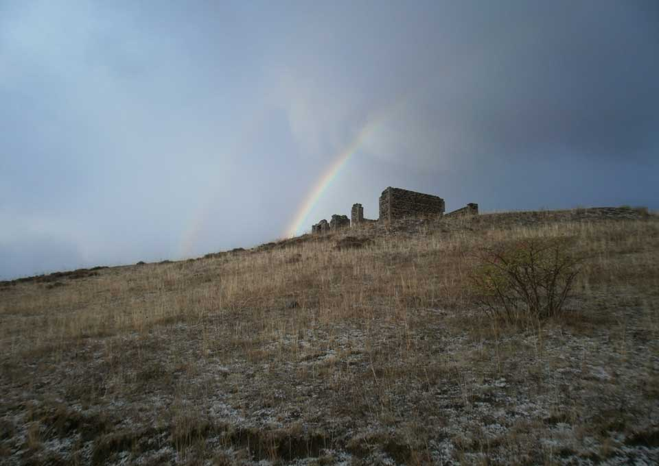

печатных книжек нет,
вот эта подпись гордая
есть мой автопортрет
сам-
Издат
:авторский
сайт
графомана
рукописи не горят!.. ...в интернете ...
Р у к о п и с и н е г о р я т, у графомана встрявшего в интернет...
Взгромазжу-ка я тут всяку всячину из долгих лет бумагомарания.
Карандашами, перьями и ручками водил я, но что орудовало мною не знает и сам Хрен Всеведущий ...
